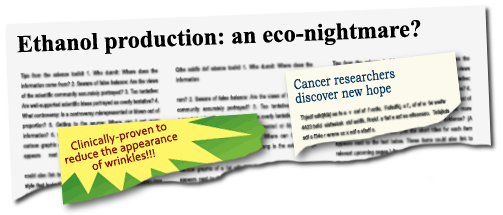

Trans-fat free! Ethanol production: an eco-nightmare? Cancer researchers discover new hope. Major petroleum company acknowledges reality of global warming. Clinically proven to reduce the appearance of wrinkles! These aren't exactly the headlines you'd find in a scientific journal, but they are examples of the sorts of scientific messages that one might encounter everyday. Because science is so critical to our lives, we are regularly targeted by media messages about science in the form of advertising or reporting from newspapers, magazines, the internet, TV, or radio. Similarly, as discussed in Science and society, our everyday lives are affected by all sorts of science-related policies — from what additives are allowed (or required) to be mixed in with gasoline, to where homes can be built, to how milk is processed. But you don't have to take these media messages and science policies at face value. Understanding the nature of science can help you uncover the real meaning of media messages about science and evaluate the science behind policies. Click the Next button to dive into the details.
